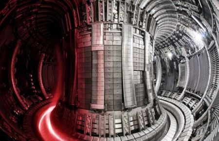
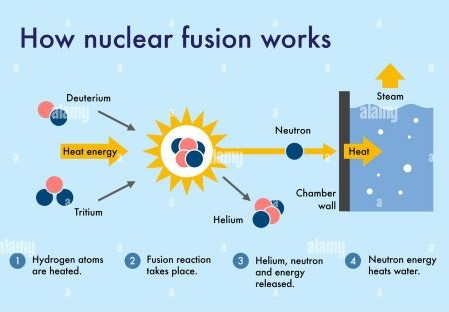

Google's approach to humanising the internet.
Google's LaMDA has the potential to revolutionize online interactions and information access, enhancing the internet's human-centric experience.
Read More


Written on June 06, 2022 by Debabrata Das
JET Reactor (Inside view) with the plasma pulse
On February 09, 2022, a historic breakthrough occurred at the Joint European Torus (JET) near Oxford, UK. Scientists shattered a 24-year-old record, achieving an unprecedented, sustained energy pulse through nuclear fusion, doubling their previous achievement from 1997. This monumental stride brings us closer to achieving clean and limitless energy generation, akin to the power of the sun. JET's success holds significance beyond its walls, resonating with the ambitious $22-billion ITER project, scheduled for fusion experiments in 2025.
JET, situated at the Culham Centre for Fusion Energy (CCFE) in the UK, stands as the core of the European Fusion Programme, a global collaborative effort. Its achievements transcend borders, making it the leading hub of fusion exploration. The astounding 59-megajoule burst of fusion achieved by JET in just five seconds surpasses its own pioneering record, marking a substantial step forward in the quest for controlled nuclear fusion.
Unravelling the Dance of Atoms: A Visual Guide to Fusion Reactions
In the world of fusion, especially here on Earth, we face some complex challenges. Imagine atomic nuclei repelling each other like magnets, making fusion difficult. To overcome this, we need nuclei to come together really fast, like in a tiny dance, so they can merge and release energy. This process needs extreme heat to turn regular gas into plasma, a kind of super-hot matter found everywhere in the universe.Fusion is like a special dance of atomic nuclei that creates a bigger nucleus and energy, just like Einstein said in E=mc^2. This energy is special because the new nucleus weighs less than the original ones combined. This can give us a lot of energy, even more than fossil fuels, and it only makes helium, which is harmless.
At the heart of this celestial ballet stands the JET reactor—a tokamak, aptly named the "toroidal chamber with magnetic coils." Deep within this doughnut-shaped vacuum, hydrogen gas encounters a transformation of cosmic proportions. Under searing heat and pressure, it metamorphoses into plasma, the very essence of stars. This electrified plasma becomes a crucible where elements mingle, birthing the quintessential energy release a breathtaking echo of the sun's core. JET's triumphant performance now illuminates the path for ITER—an audacious global endeavour weaving the scientific prowess of nations. From the European Union to China, India, Japan, South Korea, Russia, and the United States of America, ITER embarks on a quest to harness the boundless power of fusion. The European Union leads the charge, contributing 45% of the project's funding, while other partners collectively add 9%, uniting in a symphony of scientific genius through 'in-kind' procurement.
Since 2005, India has been an integral partner in the ITER Project, a commitment formalised through the 2006 ITER Agreement. While ITER Organization oversees site construction and operation, partner nations establish domestic agencies. India's agency, ITER-India, operates under the esteemed Institute for Plasma Research (IPR), a government-aided organisation. ITER-India plays a pivotal role in delivering key ITER components, including Cryostat, Shielding, Cooling, Cryogenics, Heating Systems, and Diagnostics. Gandhinagar's ITER-India laboratory serves as a hub for R&D and experimental pursuits, cementing India's enduring fusion legacy.
Google's LaMDA has the potential to revolutionize online interactions and information access, enhancing the internet's human-centric experience.
Read More
Please feel welcome to share any ideas that could resonate with the wider public.
Working on it:)